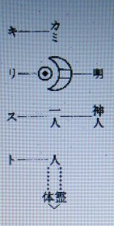

キリスト教について １ （キリストは贖罪主）
明主様御垂示 「イエスは素盞嗚尊」 （昭和23年10月8日）
信者の質問
「イエス、阿弥陀が贖罪をなした因縁について・・・」
明主様御垂示
「イエスも阿弥陀も月の系統ですが、阿弥陀は贖罪はしてない。
阿弥陀は月読尊、イエスは素盞嗚尊です。
月の照ったときは阿弥陀の働き、素盞嗚尊は闇の世界です。
素盞嗚尊は立派な神様ですが、邪神に負けて悪をしてしまったのです。
尊は日本で乱暴をしたために、伊弉諾尊に追放せられ外国へ行った。
それがユダヤであり、そこに住んで十二人の子供を生んだが、その中からキリストが出て、日本で犯した先祖の罪の贖いをしたのです。」
明主様御垂示 「キリストが贖罪主になったのは自分の悪行が原因」 （昭和23年10月28日）
信者の質問
「浄化の程度が兄弟で異るのは、祖先の罪穢の流れ方の不平等で御座いましょうか。
あるいは各々が現世で作った曇りの差異によるものでございましょうか。」
明主様御垂示
「両方である。誰かが一家の罪を除る役になる。
その人のズーッと前の世に非常な罪を犯した場合など、贖罪的に引受ける事がある。
自分が先祖自身になる事もある。
キリストとても自らの犯した罪を贖罪した。
素盞嗚尊が政治を悪くしたため、世の中は堕落し紊れた。
万人を過らした罪により、万人の犠牲となって贖罪した。
過らした人間を今度は自分が救うというのは当然である。
霊的な事は複雑した事情があり、単純な見方で解釈はつかぬ。」
明主様御講義 「キリスト教」 （昭和10年8月5日発行）
基督教
「イエス、世界人類の為に罪を贖（あがな）い救う為に生れて来たのである。
イエスはユダヤ民族でイスラエルの民である。
その時代ユダヤ教という教あり、その予言に最後の世にメシヤが現われる。
メシヤは救世主のことであり、キリストである。
メシヤとはヘブライ語で救世主という事になる。
素盞嗚尊・・・照・・・イエス
月 神・・・暗・・・マッソン（フリーメーソン）」
贖罪主
「イエスをキリストでないと言う事を見破った者ありて、あれは偽のキリストであると皇帝に告げた。
その者を生かして置いたら非常なる間違いになると言う見地からイエスを磔刑にしたのである。
イエスは素盞嗚尊が以前罪を犯した為、黄泉国へやられた。
その罪を赦して戴くために大きな功をたてなければならん、その贖罪をなされたのである。
それ故イエスは贖罪主である。人類の罪の代表者なのである。人類のお詫びの代行者なのである。」
救世主
「キリストは人類の諸々の罪の赦し主である。救世主は罪を赦しに現われるのである。

霊体密着して人となる。離れると八となる。
神明統一者である。
キリストのキは天地を貫く貴い字で、神の霊返しはキである。
キリストが雲より降ると言う事があるが、人間が雲に乗ることは絶対に出来ない。
人間が雲の上に止っていられん事に出来ているのである。
これが出来たら天地の律法に反することになる。
イエスとはイスラエルの事にして、エは天地を貫かぬ。
エは枝の働き、又江は水の枝、スは一人で統（すべ）るとなる。
素盞嗚尊の分身・分霊の事となる。
雲から降ると言う事は何か。
日月を隠すものは雲である。神を隠すものとなるのである。神を隠すものは雲の働きである。
火 日
神
水 月
これは科学文明の事である。神を隠すものは現代科学文明である。
今の文明はいかに神を隠そうかと一生懸命である。
神を隠そうと今の学者が総ての神とか霊とかを無視してこの事を発表すると、皆インチキであると決定して終う。
しかも今の世の神とか霊とか言う連中が多くインチキばかりやっているのが多い為で、本物こそ良い面の皮である。
これが為本物は非常に迷惑であるが、これを区別することを致さない警察は実に情ない。
科学がいかに神を隠すことに一生懸命であるか、それが雲の働きである。
現代文明は科学の文明である。現代においては現われると言う事が雲から現われるという事である。
則ち天から降ると言う事になるのである。
神霊文明・・・科学文明
神霊文明が天で、科学文明が地であるから、神霊文明から科学文明へ降るのである。」
キリストの再臨
「二千年の後黄金の国にキリストが再臨すると予言してあります。
黄金の国とは日本の事である。人の顔を見れば日本人は黄金色をしているのである。
中国人は青金の色であり、日本の地下には金が沢山ある。
その霊気により黄色となるのである。
キリストとイエスと一度に再臨するとある。
キリストはイエスの父なのである。
イエスでは世界統一は出来ん。二千年前ですら出来なかったのである。
国常立尊が一度世界を統一した事がある。
今イエスが現われて罪を贖（あがな）ったところで赦すことが出来んから、何程出ても無駄である。
観音会のことを世界で知ったら驚く事である。
今度は本当に金剛力を持った神様が出て今までの世を救うのである。
しかも罪を赦す権力を持って出られるのである。」 （「観音講座 第三講座」より）
明主様御教え 「救主と贖罪主」 （昭和10年9月15日）
「世間往々、救主（すくいぬし）と贖罪主（しょくざいしゅ）とを混同している。
然し、実際は天と地程の相違がある。
贖罪主とは、罪の贖(あがな）い主である。
彼のナザレの聖者イエスが、世界万民の、罪の贖いの為に、十字架に架かったのは之であった。
之こそ、大いなる贖罪主であった。
贖罪とは、罪人の代理又は代表者となって主神に対し奉り、罪の赦しを乞うのである。
故に、言い換えれば、謝罪主であり、赦される側である。
それに引替え、救主とは、贖罪主が、赦しを乞うのに対し、その罪を赦す権威者である。
然し、今日迄、贖罪主としては、大小幾人もの聖者が出たが、未だ、赦し主たる、救主は、出現されなかったのである。
その点を充分識っておかなければならない。」 （「病貧争絶無の世界を造る観音運動とは何？」より）
明主様御講話 「キリストもメシヤなりとは言わなかった」 （昭和25年3月5日）
「メシヤ教になってから第一回の五六七大祭で、非常にめでたい日である。
釈迦滅後二六〇〇年、キリスト没後二〇〇〇年で六〇〇年の開きがあるが、これは二六〇〇年を詰めた意味である。
釈迦は経で、キリストは緯で、これが結んで神の働きになる。これもよく合っている。
キリストは緯であるから広い。
仏教は経であって、緯の働きはない。
メシヤは、最後の審判のとき、救いに出ることになっている。
キリストの時代、イエスがメシヤか否かということになり、メシヤではないということになった。
そしてキリストもメシヤなりとは言わなかった。
万人の罪を負って、十字架に立ったと言った。いまもって論議はあるが、今度はっきりする。
メシヤ会館も来年の五六七祭までにはぜひ間に合わす。一五〇〇人入れる。
神様のほうは大きい計画である。一昨日、アメリカ・・・。
アメリカには大仕掛けのものがある。瑞雲郷はアメリカの好みに合う。」
明主様御講話 「イエスとキリストは違う」 （昭和26年12月25日）
（御論文「絶対力」発表）
「今日はクリスマスで、世界中がなかなか大騒ぎをしている・・・
さっき、ローマのバチカン宮殿から、鐘の音だとか、音楽だとか、法王ですね・・・
あの人の言葉や何かも、放送されましたがね。
まあ・・・大変な訳のものですね。
しかし、キリストのやった仕事は、二千年経っても、
ともかく人類の魂の堕落を、ある程度食い止めていたことは、確かなんですが、
まあ・・・大いにほめたたえても良いんですが、今読んだように力が足りなかったんですね。
だからと言っても、別に腕力や暴力じゃないんですが・・・見えざる力ですね。
それが足りなかったという事は、時期がそこまで行ってなかったんです。
で、その時期というのは、文化ですね。
文化が、キリストの生まれた時分は、幼稚なもので、
とても今日のような、国際的あるいは世界的にまでなっていなかった。
だから、あの時分に天国や五六七の世を造ろうと思ったって、
まあ・・・造れたとしても、それは本当のものは出来なかったんですね。
物質文化が幼稚であった為に、天国のような結構な世界は出来なかった。
ところが今はですね。
今の物質文化を見れば・・・一言しゃべれば世界中、隅々まで聞こえるんですからね。
立派に天国の条件が出来たんですね。
それに対して、それを出来上がらせる力ですね。
その力が、今言った様に、経緯結んだ力ですね。
今読んだ通り、結びの力ですね。
この結びの力が絶対力という訳ですね。
キリストの十字架ですね・・・これもその事なんです。
その予言ですね。
それから、仏教の卍（まんじ）ですね・・・［逆卍］も十字ですね。
ですから、力という字は、［逆卍］を略したものですね。
［逆卍］は結ぶと、鍵の手がある。
鍵になっている。これは、ぐるぐる回る形ですからね。
今まではこう（卍）いう［逆卍］になっている。
世間では、本当の［逆卍］といっているが、我々からは、逆［逆卍］になる。
仏教は月の教えですから、水になる。右進左退になる。
本当は左進右退にならなければならない。
これ（卍）じゃいけない。今までは右進左退になっている。
全く、良く出来ているんですよ・・・文字はね。
ですから、文字と言霊で解釈すると、大抵な事は分かるんです。
神秘が分かるんですね。
そこで、今言ったような力というのは、その結んだ力ですね。
それを私が神様から与えられているんです。
だから、お守りを懐に入れると病気が治るという事は、それだけ発揮できる力ですね。
だから、昔からの事を、良く考えてみると、実に良く出来ている。
と共に、良く理屈に合っているわけですね。
それで、キリストは・・・再臨のキリストという事も、予言されていますがね。
これは黄金の国ですね。つまり日本ですね。
黄金の国に再臨するという事になっている。
今言っているキリストは、イエスですね。
イエスとキリストは違うんですがね。
これは、以前も言った事があるが、言霊で解釈すると分かる。
「キ」というのは、神と言う事です。
「キ」と言う言霊は、霊体を結んである言霊なんです。
「カミ」の言霊返しは「キ」になっている。
神は火水（かみ）ですからね。
火と水が結んで「キ」になるんですからね。
だから「キ」というのは、一番貴いんです。
天皇の事を「キミ」と言うが、貴いんですね。
貴いという字も、「キ」と読みますね。
「リ」というのは、これは字で書くと、二つになるんですね。
霊体という事なんです。
霊体が経に働くと言う言霊で、言霊で言うと「リ」は「ル」で、渦巻く意味です。
渦巻くという意味は、広がると世界的になる。
「ス」というのは、一人ですからね。
それから、「ス」というのは、統べる・・・イロハで言うと、一番最後につく・・・神様が作ったんですね。
「ト」は人というんです。
ですから、キリストというのは、今言ったような意味ですから、イエスとは違うんです。
キリストはイエスが出るよほど前に出ているんだから、再臨すると言うのは、その方が再臨するというんですね。
イエスは、ヨセフとマリアの二人の間に出来た子供です。
聖霊に感じて身ごもったというのは作り事なんです。
そんな馬鹿な事はないんです。
ですから、今まではキリストでもお釈迦さんでも、力がなかったですね。
要するに、両方結ばったんじゃないから・・・一方的だから力がない。
そこで、キリストはなるほど奇跡をやられた・・・という事は聖書にありますけれども、
今メシヤ教の信者がやっている奇跡は、キリストと同じ位なものですよ。
昨夜か、奇跡座談会の報告がありましたが・・・読んで見ましたけれども・・・
あれは生和会かのですが、まるで・・・みんなの奇跡が、ちょうどキリストがやっているのと同じですよ。
そこに、やっぱり力の発揮が・・・キリスト一人だったんだからね。
弟子がそう言う奇跡を行うものはなかったんですからね。
だから、メシヤ教と比べてみれば、そのくらいの違い差があるんですね。
今、力の話をしましたけれども、この力というのが、つまり一厘の力というんです。
つまり、世界が、・・・あらゆるものが行き詰まって、九分九厘になった。
そこで、一厘の力ですね・・・力が現れて、そうして、大転換ですね。
ひっくり返しちゃう。
この九分九厘と一厘というのを読ませます。」
明主様御講話 「贖罪主は専務みたいなもの」 （昭和27年4月6日）
「それから、原子爆弾で助かったお蔭話ですね。
これも、七つばかり来ましたからね。
私は、それを発表するように言ってあるんです。
これも、今度良く説明をつけて、この次あたりに読ませますがね。
そんなわけで、私の弟子がキリストくらいの奇蹟をすれば、やはりキリストも私の弟子になるんです。
それをはっきり分かっていなければ、キリスト教信者なんか誤解します。
というのは、もう一つ言っておくことは、キリストは贖罪主なんです。
贖罪主というのは、一つの会社なら専務ですね。
専務みたいなものです。
もし会社でいろんな過ちがあったりしますと、専務が代表者になって、
許してくれと言って社長にお詫びします。
贖罪主というのは、そういうものです。
万民の罪を御自分が負って、万民になり代わって十字架にかかる。
贖罪主とは別に、社長ーすなわち、よし許すと言う、許し主がなくてはならない。
私は許し主なんです。
ですから、そういう点は非常にー主人と家来ほど違うんですね。
こういうことも、今までも言いたかったんですが、あまりかけ離れているから、誤解されますので言わなかった。
明主様は、誇大妄想的な脱線だ。
と、未信者は言いますから、言わなかったんですが、もうソロソロ言っても良い時期になったので、言ったんですがね。
そういうことも知ると、よけいいろんなことがはっきり分かるわけですね。
そのくらいにしておきます。」
明主様御講話 「キリストもメシヤなりとは言わなかった」 （昭和25年3月5日）
「メシヤ教になってから第一回の五六七大祭で、非常にめでたい日である。
釈迦滅後二六〇〇年、キリスト没後二〇〇〇年で六〇〇年の開きがあるが、これは二六〇〇年を詰めた意味である。
釈迦は経で、キリストは緯で、これが結んで神の働きになる。これもよく合っている。
キリストは緯であるから広い。
仏教は経であって、緯の働きはない。
メシヤは、最後の審判のとき、救いに出ることになっている。
キリストの時代、イエスがメシヤか否かということになり、メシヤではないということになった。
そしてキリストもメシヤなりとは言わなかった。
万人の罪を負って、十字架に立ったと言った。
いまもって論議はあるが、今度はっきりする。
メシヤ会館も来年の五六七祭までにはぜひ間に合わす。
1500人入れる。
神様のほうは大きい計画である。
一昨日、アメリカ・・・。アメリカには大仕掛けのものがある。瑞雲郷はアメリカの好みに合う。」
明主様御垂示 「メシヤ教に贖罪的なことはない」 （昭和28年8月1日）
信者の質問
「自分のまわりの者、たとえば親子、兄弟、知人という自分に関連のある人が罪のために悩んでいる場合に、
神様にお詫びして、その罪をつぐなわせていただくということは、お願いできるものでございましょうか」
明主様御垂示
「できますが、本当ではありません。
それは他の宗教はそれでよいが、メシヤ教はちょっと違います。
そういう贖罪的のことはありません。
ですからある場合に、それはないことはないが、だいたいはないとみてよいのです。
つまり贖罪をしたら人を救えないのです。
それが三人や五人ならよいですが、一人で百人も二百人もの贖罪をしていては、その人は活動ができません。
だからキリストのように全人類の贖罪をしたために命がなくなったのです。
これは月の神様の系統は贖罪をするのですが、
私のほうは火の系統の神様ですから贖罪はないのです。
月のほうは洗うのですから、ちょうど洗濯の水が汚れるようなものです。
ところが火のほうは焼いてしまうのですから、むしろ灰が出るのです。かえって火力が強くなるのです。」
明主様御垂示 「キリストの贖罪について」 （昭和26年9月25日発行）
信者の質問
「キリスト教徒が教義の根本としての贖罪を強調して、イエスキリストの十字架上の受難像を信仰の対象としておりますことは、
信徒の想念によりて霊界に受難の想念像を像造ることにより、いつまでもイエスキリストの霊を苦しめることになるのではございませんでしょうか。
もしそうであるといたしますと、贖罪主を地獄に磔（はりつけ）にして信ずることにより救われるという教義の一大誤謬を思わしめるものであります。
右は転向者ＩＨ子（教師）が去る十月十七日、次女「明子」（カトリックの熱心な信徒）が、
「御心のイエス様」という胸にハート型を抱かれる御像を求めて帰ったことにより、かつて教会において聞かされた話、
「約一世紀前ある国のキリスト者（マリヤ・マリという修道女）にイエス様が現われ給い、
人類のために血潮を流し尽くしたのにこの苦しみを償ってくれない、
せめて月の始めの金曜日の御ミサを受けてほしい」との意味の言葉を想い浮かべ、
その日よりイエス様のために善言讃詞を奉唱し続けておりましたところ、
たまたま十一月一日夕方、Ｔ雄（昨年三月十三日帰幽、その後本教への疑念の浮かぶごとに、夢または幻によりて本教の正しさを強調しております）Ｔ雄は観音のお使いだ、お使いだと独り言を言っている自分にハッと気づき、
そんなもったいないことを、とみずから否定とも肯定ともつかずおりますと、
その夜の夢にＴ雄は大国主命のお使いだという意味を見せられていたそうであります。
その後十一月三日夕方、御不浄にて直観的に十字架の受難像のことが頭に閃（ひらめ）いたとのことであります。
このことは、明主様のお許しいただく日まで、口外することは絶対許されないことでありますが、
かつてキリスト者であった自分の心の中にだけその真実を知り得て、
今後キリスト者たちへの布教の信念といたしたいと願っております。
しかり、否、の御言葉にても御垂示のお許しを賜りたく伏してお願い申し上げます。」
明主様御垂示
「キリストの贖罪は、万人の罪を一身に引き受けて、償われたので、その大愛に対して感謝し礼拝し祈るのである。
従って、いままではそれでよかったのである。
ところがメシヤ教の信者になれば、その必要はなくなったのである。
というのは、もはやキリストは再臨されたからである。
これには深い神意があるが、いずれ詳しく説くつもりである。」
「レモン・カルティエ氏夫妻と御対談」より （昭和27年7月9日発行）
メシヤの降臨について
カ氏の発言
「キリストはメシヤであると・・・」
明主様御発言
「メシヤではないです」
カ氏の発言
「ということになっておりますが、カトリック信者がどういうふうに入ってくるのでしょうか。
二度目のメシヤ。ユダヤなんかはまだメシヤが来てないと思っているのですが、降臨ということについて・・・」
明主様御発言
「それは私が精しくお話しすることができないです。
私がメシヤの降臨とかキリストとすると、ワーッと来て仕事ができないです。
いまいろいろ仕事があるし、書くのもたくさんある。私のバイブルですね。
それができるまでは公然と言わないんです。
だから、ぼかしてあります。そういう意味ですからね」
カ氏の発言
「恐れ入りますが、できれば御手の写真を撮りたいと思いますが・・・」
明主様御発言
「良いですよ」
（明主様御発言がお手をかざしになるのを正面より写す）
カ氏夫人の発言
「世の苦しみを治す手、という題で出します」
カ氏の発言
「いつバイブルがおできになりますので」
明主様御発言
「そうですね。来年あたりできますがね。それは「文明の創造」という本です。」
カ氏の発言
「できましたら、私たちのほうになるべく早く送っていただきたいと思います」
明主様御発言
「それからいままでの出版物がいろいろありますが、それをみんなあげます。
その中には私の弟子で、キリストと同じようなことをした人の手記とかいろいろ出てますから、それをお読みなさい」
カ氏の発言
「英語で・・・」
明主様御発言
「いや、日本語です」
カ氏の発言
「非常に感謝しております。心から御礼を申し上げます」
明主様御発言
「美術館をご覧になりますか。それから、これを言っておこう。
ここに造ったのは、世界に天国を造るその世界の天国のごく小さい模型なんです。
そういう意味ですからね」